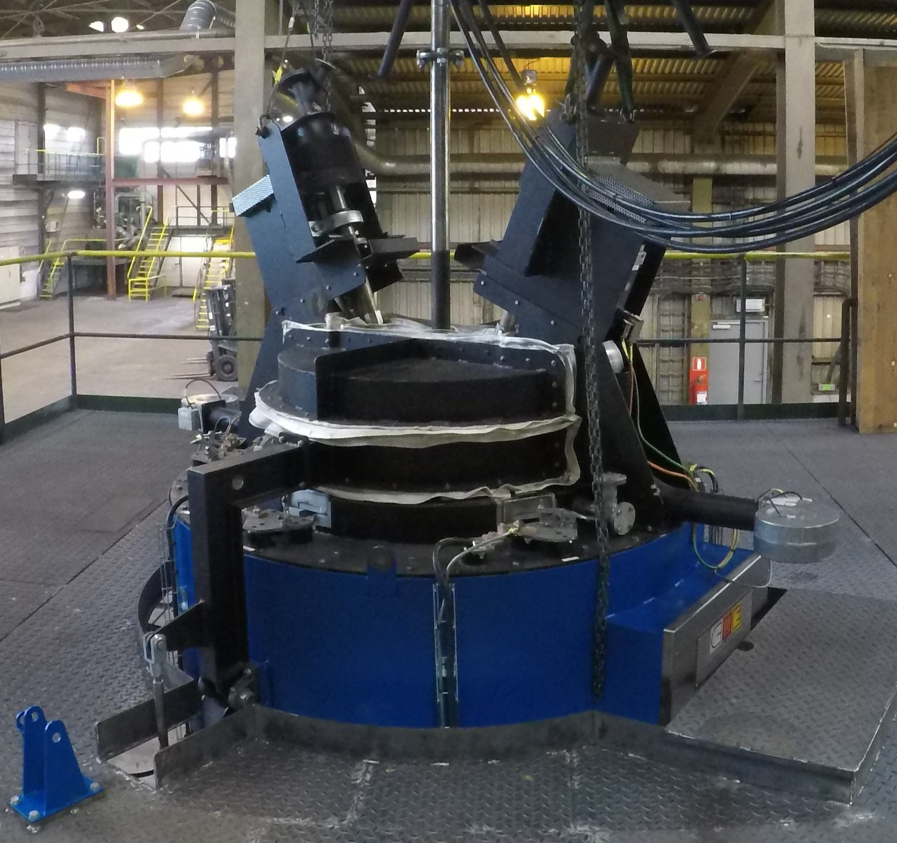

Neodymium production Furnace
High-temperature electrolysis furnace for extracting rare-earth alloys from electronic waste.
The furnace heats a molten salt bath to over 1000 °C, drives a high current through it, and feeds crushed rare-earth oxides from the top. Rare-earth alloys form in the bath and are extracted from the bottom.
